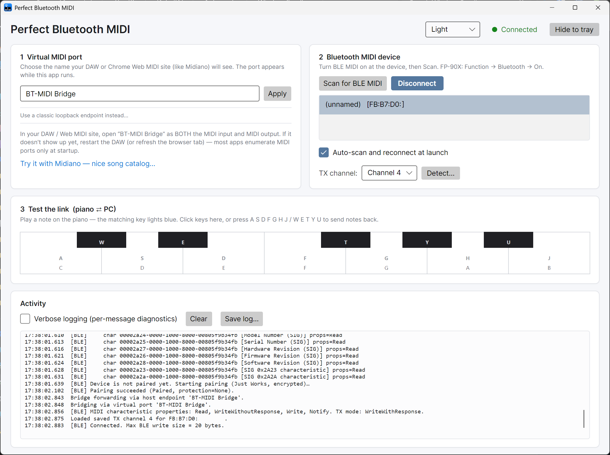

A tiny Windows app that bridges a Bluetooth LE MIDI keyboard (Roland FP-90X, WIDI Master, CME, Yamaha MD-BT01, …) into the new Windows MIDI Services stack — so any DAW or Chrome Web MIDI site (like Midiano) can use it as if it were wired.

Bluetooth LE MIDI on Windows is a minefield of silent-failure modes —
packets return Success at the ATT layer while the device ignores
them, pairings that don't encrypt, receive channels that aren't the
advertised transmit channel. This app handles each of those explicitly.
If you have the WMS App SDK Runtime installed, the app declares its own MIDI port on demand — no loopback to create, no MIDI Settings dance. Just type a name. Falls back automatically to the classic loopback flow when the SDK Runtime isn't installed; switch backends in-app at any time, and the BLE link rides through the swap.
Quit the app while connected and the next launch finds your last device and reconnects on its own as soon as it advertises. Off-by-one click if you'd rather always pick manually.
Some pianos (FP-90X) silently receive on a channel that isn't the visible Transmit Channel. Click Detect…; the app plays N ascending notes on each channel 1..16. Count the notes you hear = the receive channel. Saved per BLE MAC.
Pair proactively before enabling notifications (several BLE-MIDI devices drop MIDI on an unencrypted link while still returning Success at ATT). Prefer WriteWithResponse; some firmware silently drops WriteWithoutResponse.
Avalonia UI with a bidirectional on-screen keyboard for quick testing — plus a headless CLI mode (--scan, --connect, --detect-channels, --phase N) for scripted debugging of new devices.
Activity panel with a Verbose toggle — shows status-byte names and hex for every message, plus the full GATT service/characteristic tree on connect. Save log… writes it to a file you can share.
Exit unpairs the device so your phone / another PC can take it over, instead of leaving Windows stuck bonded to the keyboard. Hide-to-tray keeps the bridge running in the background; the X button actually exits. Light / dark / system theme picker in the header.
After ruling out pairing, encryption, proprietary ISSC characteristics, and write-mode quirks on a Roland FP-90X, it turned out the piano receives MIDI on channel 4 while its front-panel Transmit Channel shows 1. Every NoteOn we were sending on channel 1 was accepted by the GATT layer and silently dropped by the piano's MIDI engine. No error, no clue.
The built-in Detect… button nails this in about 75 seconds without any DAW setup. The fix is persisted per BLE MAC, so you do it once per device and never think about it again.
One-time, about five minutes total. Full instructions and troubleshooting are in the README.
The WMS service itself ships with recent Windows 11 updates. Strongly recommended: also install the Windows MIDI Services SDK Runtime and Tools — once it's installed, this app skips the loopback step and creates its own MIDI port on demand.
Grab PerfectBluetoothMidi.exe from Releases. Single ~21 MB file — put it anywhere and double-click. No installer.
Card 1 shows either a Virtual MIDI port name field (default BT-MIDI Bridge) or a loopback dropdown. Type a name and click Apply, or pick an existing loopback. (If you took the loopback path: open MIDI Settings → Create loopback pair → root name BT-MIDI Bridge, or run midi loopback create --root-name "BT-MIDI Bridge". The app will offer to do this automatically on first run.)
Put your BLE-MIDI device into advertising mode, click Scan, pick it from the list, click Connect. If nothing sounds when you press keys: click Detect… next to the TX channel dropdown and pick the channel with the audible burst. The Auto-scan and reconnect at launch checkbox in card 2 is on by default — next time you open the app it'll find your last device and reconnect automatically.
Most MIDI hosts — DAWs, Chrome's Web MIDI backend, MIDI-OX — enumerate available ports once at startup. A port that appears after the host launched won't show up until you restart it (or refresh the browser tab for Web MIDI sites). After you've done that once, leave this app running and the port stays visible across normal connect / disconnect cycles.
app.midiano.com is a beautiful Chrome Web MIDI app with a nice catalog of songs that play themselves on your piano. Open it in Chrome / Edge, pick the port name shown in the app's card 1 hint as the MIDI output, and hit play on any song — your keyboard plays it.